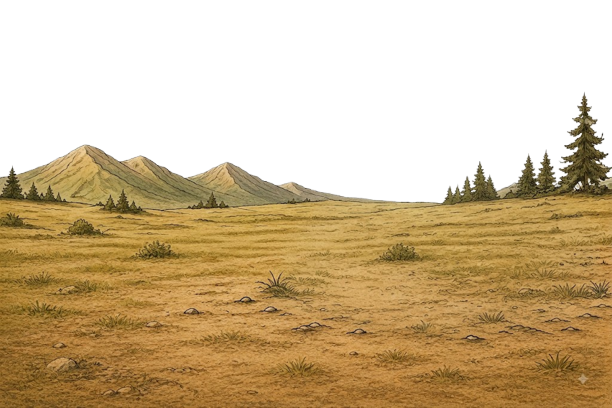

What We Do
Worship &
Songwriting
Word-based worship songs that heal, encourage, and glorify Jesus — written, composed, and released for the Church.
WATCH NOW

— the promise Yireh Ministry is built on

Word-based worship songs that heal, encourage, and glorify Jesus — written, composed, and released for the Church.
WATCH NOWYireh Ministry was founded by Pastor Srikanth katamala and Bro Srimanth katamala whose calling was confirmed through dreams, prophetic words, and spiritual encounters. The vision? To build a Christ-centered ministry where broken hearts are healed, souls are saved, and worship rises with purity and power.
From viral worship songs to life-changing gatherings in India and USA, this is the story of a simple “Yes” to God that became a global testimony.
Know moregather with us
Details on this gathering are on the way. Register now to be the first to know.
Register InterestDetails on this gathering are on the way. Register now to be the first to know.
Register interest
Songwriters & Worshipers
Share what God has given you. Submit lyrics alone, or lyrics with a tune — either way, we'd love to hear it. Selected songs may be featured in Anthems Season 1.


We would love to stand with you in prayer. Whatever season you're walking through — you are not alone.
send prayer requestget in touch
Whether you want to invite Yireh Ministry to your church, submit a prayer request, or just say hello — we'd love to hear from you.
Visit Contact Page
Churches across India and USA

Yirehministryglobal@gmail.com